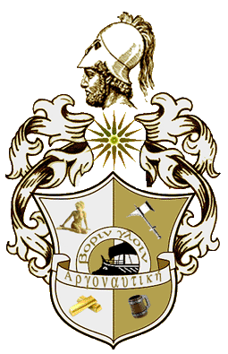

|

|
Das schwarze Brett
|
|
| Übersicht,
Geschichten (RPG) |
|
Noch so´n beklopptes Tagebuch (1637  ) )
|
| Captain Jacqueline Sparrow (RIP) |
Sie stand am Bug des Seglers und blickte hinaus auf die Mole. Hunderte standen dort und schauten zu ihr auf, im ganzen Hafengelände hielt man inne und den Atem an. Wollten sie ernsthaft in See stechen?
Noch gestern hatte es Zweifel gegeben. "Willst du wirklich gehen?", hatte er sie gefragt und sie hatte genickt.
"Und du, willst du wirklich bleiben?"
"Nein", bestätigte er, "aber Amóviel will es."
Sie lächelte. "Wo dein Herz ist, da ist auch dein Weg."
"Wir werden uns nicht wiedersehen..." Seine Stimme war ungewöhnlich dünn und leise für die große, kräftige Gestalt.
Doch sie lächelte weiterhin. "Das weiß man nicht. Was wissen wir schon? Wir sahen Zeichen, ergriffen Fragmente und haben daraus einen Sinn interpretiert. Doch das Gesamtbild blieb uns verschlossen. Ich werde es noch einmal wagen. Vielleicht ist es der Weg in eine alte Heimat, vielleicht auch der Weg in eine neue. Sei es! Bendurs Wege sind nicht ergründlich."
Da erwiderte er ihr Lächeln zaghaft, doch in seinem Herzen blieb es dunkel.
Und nun stand Elilman neben ihr. Die Elfe an seiner Seite hatte ihre Zweifel verdrängt, weil sie ahnte, dass ihr Mann nicht mehr derselbe wäre, wenn sie blieben. Sie hatte ihre Ängste in einem tiefen Winkel ihres Herzens eingeschlossen und die Kisten gefüllt. Nun waren sie gekommen.
Elilman lachte, so sorglos und fröhlich, wie es nur ein freier Elf kann. "Wir gehen auf See", meinte er zufrieden. Sein Arm lag um Amóviels Schultern und druckte sie eng an sich.
Sanft stieg das Schiff an der Mole auf und nieder und sie blickten hinaus auf die unendlich weit entfernte, dünne Linie, wo blau auf blau traf. Der Wind spielte mit ihrem Haar.
"Mama!" Wie ein Schwarm Möwen kamen sie über sie. Sieben kleine Wesen hatten sie erreicht, kletterten wie Affen an ihr hoch, bis eines auf ihrem Kopf saß, eins auf der Schulter, eins hing am Rücken, die anderen an Armen und Beinen. Zärtlich pflückte sie die Kinder ab und ging in die Hocke.
Die Kinder redeten auf sie ein. "Wann segeln wir endlich los?" - "Ich habe Eier gesehen. Gibt´s die heute Abend?" - "Aggad hat mich geärgert!"
Sie nahm den Jüngsten in den Arm, der ihres Trostes bedurfte. "Das war bestimmt keine Absicht", sprach sie sanft zu ihm. Ihre Fingerspitzen wischten eine Träne von seiner Wange.
Das waren sie, ihr Schatz, das größte Gut auf Scherben, das sie hatte. Sorgfältig hatten sie sie behütet in den letzten Jahren. Die Zahl ihrer Feinde war groß und so hatten sie ihre Schwangerschaft verborgen und später auch die Kinder. YLAT war nicht groß und ihre Besucher konnte man lenken.
Nur wenige wussten von ihnen, ihre Paten allenfalls, Raphael, Morgan, Avalon... Sieben Kinder waren es, sieben auf einen Streich, wie ihr Papa gerne lachend verkündete. Schwer war die Schwangerschaft für sie gewesen. Elfen sind nicht dafür geschaffen, so viele Leben auf einmal auszutragen. Schon früh musste sie liegen und sich helfen lassen, ein Zustand, der für sie fast unerträglich war. Unter Schmerzen und Schreien hatte sie sie schließlich nach nur acht Monden geboren.
Ach, wie waren sie winzig und nackt! Tagelang hielten sie ihre Augen ständig geschlossen und waren schwach und bläulich. Sie alle erschraken darüber und die Heiler hatten kaum geglaubt, dass sie überlebten. Drei Ammen waren nötig, damit alle genug bekamen, und in Folge dieser Nahrungsfülle wuchsen die Kleinen rasch heran.
Am Anfang hätte man sie fast für menschliche Kinder halten können, wenn sie da so eingewickelt in ihre Windeln lagen. Doch schon nach sieben Tagen begann das Fell zu sprießen und kurze Zeit später umhüllte es sie von den Ohren bis zu den Füßen. Nach sechs Monaten begannen die ersten von ihnen zu klettern. Mit einem Jahr liefen sie alle bereits sicher und hatten ihre Größe verdoppelt.
Elijah war ihr Erstgeborener, benannt nach seinem Vater. Sein Fell hatte dessen Farbe geerbt und seine Augen funkelten braun und warm.
Der Zweitgeborenen gab man den Namen Lil, eine Abkürzung von Jacqu elfischem Namen Gweriolil. Ihr Fell war hell wie Milch und ihre Augen so meerblau wie die ihrer Mutter.
Die dritte nannte man Aggad. Ihr schwarzes Fell war ständig verfilzt, denn sie verbrachte ihre Tage am liebsten auf Bäumen und in der Heide. So dunkel ihr Fell war, so dunkel waren auch ihre Augen. Sie beschäftigte sich weniger mit anderen Kindern, doch mit wilden Tieren war sie Freund.
Der vierte trug dichtes, feuerrotes Fell. Serah wurde er genannt und war wild und fröhlich und unberechenbar wie eine Flamme.
Das fünfte war wieder ein Junge, Hauro mit Namen. Sein langes, blaugraues Fell lag wie Wellen um seinen schmalen Leib. Ein Träumer war er, der über die See blickte und in seinen blauen Augen las man die Sehnsucht.
Die sechste war von Anfang an die Größte gewesen. Sie schien das Meiste von der Mutter geerbt zu haben. Ihr Schweif war der Kürzeste und ihr Fell war dünn, als wüsste es nicht so recht, ob es hierher gehöre. Es war rot und blond gestreift. Benannt wurde sie nach ihrer Großmutter Cuileth.
Und als schon alle dachten, die Kinder wären auf der Welt und nur die Nachgeburt sei noch zu erwarten, da kam ein kleines, blasses Kerlchen auf die Welt. Winzig war er und ganz blau im Gesicht. Er wuchs langsamer als die anderen und brauchte am Anfang für alles ein wenig länger. Den nannten sie Theon.
Fünf Jahre waren seitdem vergangen und die Kinder, die sie jetzt umschwirrten, hatten mit den kleinen, hilflosen Bündeln von damals nichts mehr gemein. Fröhlich waren sie, laut, frech und verwegen. Nichts an Bord der Pink Pearl war vor ihnen sicher, wirklich gar nichts!
So ergriff Elijah jetzt ein Seil und kletterte flink in die Wanden. Die anderen sahen das, ließen von Jacqu ab und folgten ihrem Bruder. Auch Theon löste sich aus ihrem Arm und kletterte flink hinterdrein. Ihr Schreien und Jauchzen hallte weithin über das Schiff.
"Können sie auch nicht herunterfallen?", fragte Amóviel besorgt.
"Ich hab ihnen gesagt, wenn sie das tun, versohl ich ihnen den Hintern", grinste Jacqu und blickte den sieben nach.
Der Bootsmann trat jetzt zu ihnen. "Wir sind klar", bestätigte er.
"Gut."
Jacqu trat an die Reling und hob die Hand. Der Bootsmann stieß Luft in eine Pfeife und mit dem schrillen Ton erstarben die Gespräche. Auf den Schiffen und an Land blickten sie auf sie. Unter den Zurückbleibenden sah sie vertraute Gesichter, geliebt oder gehasst, aber auf jeden Fall verbunden mit ihr seid Jahrzehnten. Ihre Kehle schnürte sich zu, doch sie drängte das Gefühl weit von sich.
Die Priesterin streckte eine Hand in den Himmel und die andere zu Boden. Dann rief sie mit lauter Stimme: "An Land und auf See. In Freude und in Schmerz. Im Leben und Tod: Ihr seid Bendurs! Und Bendur segnet euch!" Ein tiefes Grollen lag unter ihrer Stimme, wie ein weit entferntes Donnern. Der Wind zerzauste ihr Haar, so dass es flackerte wie eine Flamme.
"Er segnet euch", rief sie, "mit Wind für eure Segel! Er segnet euch mit Fischen für eure Netze! Er segnet euch mit Regen für eure Äcker! Er segnet euch mit der Flamme des Glaubens! Er segnet euch mit der Gemeinschaft der Gläubigen! Er segnet euch mit dem Weg der Gewissheit! Er segnet euch mit dem Ziel der ewigen Seligkeit! So sei es!"
Eine Böe fegte durch die Menschen und Zwerge, Elfen und Halblinge und ließ sie kurz schwanken, bevor sie sich in Nichts auflöste.
Jacqu ließ ihre Hand sinken. "Ade", sagte sie leise. Dann blickte sie den Bootsmann an und nickte.
Sofort blies dieser in seine Pfeife. Das Signal wurde weitergegeben von Schiff zu Schiff. Die Matrosen holten die Gangway ein und warfen die Taue los. Sie stiegen in die wanden und befreiten die Segel, die sich knatternd in dem erstarkenden Wind entfalteten. Man hörte geschriene Befehle und Rufe von den Menschen unten am Kai.
Das erste Schiff löste sich von der Mauer, die gewaltige "Narwal". Ihr folgten die "Orinoco" und dann nach und nach fünf weitere Schiffe. Eine kleine Flotte und alle sieben Schiffe standen unter ihrem Kommando. Auch die "Pink Pearl" glitt aus dem Hafen. Der Steuermann suchte den Weg durch Felsen und Markierungsfässer, bis sie ins tiefe Wasser kamen.
Die Geräusche an Bord verschluckten jene vom Land her. Jacqu konnte sie nur noch fühlen, doch auch das verblasste. Ein tiefempfundenes Hochgefühl überspülte sie, stieg sprudelnd wie ein Quell in ihr empor. Sie zog die Schultern nach hinten, richtete sich auf. Ihre Augen funkelten vor Freude. Und da warf sie den Kopf in den Nacken und schrie. Sie schrie kein Wort, sondern nur dieses Gefühl hinaus.
Da antwortete ihr ein Brüllen von hoch oben aus dem Mastkorb und sie sah Elijah, der die Seile ergriff und sich zu ihr herunter schwang. Ihm folgten ihre sieben Kinder, wuselnd wie eine Schar Eichhörnchen. Als er vor ihr stand, ergriff sie seine Hand, legte den Kopf wieder in den Nacken und dann brüllten sie gemeinsam, bis sich ihr Brüllen in schallendes Gelächter auflöste.
"Ich glaube, das wird die beste Fahrt meines Lebens", stellte Jacqu fest und lehnte sich an die Brust des Katers, "denn du bist bei mir!"
Elijah antwortete mit einem Schnurren und zog sie an sich. "Gemeinsam schaffen wir alles!", bestätigte er.
Sie nahmen Kurs auf den Hundsstern, den die hereinbrechende Dunkelheit offenbarte. Dieser Stern war Jacqu so vertraut wie eine ferne Heimat. Das Seevolk kannte einen anderen Namen für ihn: Todesstern. Wer ihm folgte, kam nie mehr zurück...
Hinter ihnen wurde YLAT zu einem dunklen Flecken im Blaugrau der See. Ein karges Stückchen Erde, das ihnen eine Zeitlang Heimat gewesen war. Nun ging es hinaus auf eine Reise, die alles verändern würde. Doch das Bedauern erstarb im auffrischenden Wind. Sie blickten nicht zurück.
- - - - - - - - - - - - -
((Liebe Freunde,
ich habe mal nachgesehen: Seid sechs Jahren bin ich bei Scherbenwelten dabei. Es war eine zeitweise sehr spannende und aufregende Zeit, manchmal auch sehr nervenaufreibend, fordernd und frustrierend. Freunde habe ich gefunden, manche nur für Monate, andere Freundschaften bestehen auch heute noch fort, obwohl die Spieler SW längst verließen.
Ja, viele sind gegangen oder haben ihre Aktivitäten sehr eingeschränkt. Und auch mir fehlte ob meines Privatlebens in den letzten zwei Jahren die Zeit, mich hier stark einzubringen.
Wieso ich blieb?
Tja, das lag vorrangig an den Lohratreffen, die zu organisieren mir immer viel Spaß und Freude bereitete. An dieser Stelle noch mal danke an alle, die Jahr für Jahr den (teilweise recht langen) Weg in Kauf genommen haben, um uns zu treffen.
Doch Lohra ist nun Geschichte für mich, ein schmerzhaftes, aber gleichzeitig auch etwas erlösendes Ende, wie ich sagen will. Darin gleiche ich Jacqu: Ich blicke nicht zurück.
Ich glaube, die wichtigen Leute haben unsere Adresse, E-Mail oder ICQ und dürfen gern mit uns in Kontakt bleiben, wenn sie möchten.
Ich wünsche euch und allen anderen weiterhin viel Spaß in SW. Genießt die Zeit, jetzt sind die besten Jahre eures Lebens!
Alles Liebe
Maria aka Jacqu))
Lady Captain Jacqueline Sparrow,
Hohepriesterin im Dienste des einzig wahren Glaubens an Bendur,
Ehefrau des ehrenwerten Elijah
Zur 3. Stunde am 68.Dunkelfrost im Jahre 438 |
26.08.09 21:42
|
|
Ajnin
  |
Ajnin erhebt sich am Strand von YLAT, wo seine Hände die letzten Spuren der abgefahrenen Schiffe im Sand berührt haben.
Ajnin,
Vorsteher von Todenwarth,
Priester im Dienste des einzig wahren Glaubens an Maki,
Anführer der glorreichen Nation "Die Fraggles"
Zur 7. Stunde am 85.Dunkelfrost im Jahre 438 |
30.08.09 22:00
|
|
| Will Campbell (RIP) |
Schweren Herzens schaue ich dem Schiff am Horizont nach. Tiefe Trauer, aber auch ein tröstender Gedanke bewegen mich. Ich hoffe, dass die beiden Ihr Ziel erreichen werden und es wirklich die beste Fahrt Ihres Lebens wird. Viel Glück Euch beiden! *Dreht sich um und verschwindet in der nächsten Taverne*
Sir Will Campbell,
Hohepriester im Dienste des einzig wahren Glaubens an Urvan,
Schutzpatron des Krieges
Zur 13. Stunde am 6.Saatmond im Jahre 439 |
02.09.09 12:54
|
|
Borin Gloin
  |
Winkt traurig dem Schiff hinterher.
Sir Borin Gloin
Zur 16. Stunde am 24.Saatmond im Jahre 439 |
06.09.09 18:23
|
|
Übersicht,
Geschichten (RPG)
|
|
|
|